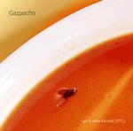

| Artist: | Gazpacho |
| Title: | Get It While It's Cold |
| Label: | self produced |
| Length(s): | 36 minutes |
| Year(s) of release: | 2002 |
| Month of review: | [09/2002] |
| 1) | Sea Of Tranquility | 5.14 |
| 2) | Nemo | 3.54 |
| 3) | Ghost | 5.24 |
| 4) | Delete Home | 3.12 |
| 5) | Sun God | 4.31 |
| 6) | The Secret | 5.37 |
| 7) | Bravo | 6.40 |
Nemo is more up-beat and off-beat as well. The first part has off-beat drums, slightly jazzy in feel, and shows a closeness to the Brave side Marillion. The song rocks a bit more in the chorus, with rather distinctive phrasings and guitar and organ setting in. The end of this track is VERY Hogarth, also in the vocals
After the bouncy Ghost, built on a very memorable dancing piano run, we come to the three new tracks. The first of these is Delete Home with plenty of percussion and strumming . The harmony chorus is again an accessible one followed by a good bridge with good, different vocals melodies, mellotron and organ.
Sun God is a brooding one with reverberating keyboards and talking people. This is a typical Hogarth style song with a slow moving passionate vocal performance. The strings in the back work really well. I also feel the presence of A-Ha in this song.
The Secret is a somewhat off-beat bouncy piece with hammered piano, strumming acoustic guitar, a bit of violin, and Jan on intimate mode. Both the latter two tracks have at least passages that are less poppy and more focused on atmosphere than the other tracks. This is a good thing. The intermezzo is somewhat classical, and rather distinctive. The ending is powerful.
By far the most succesful song on the album Bravo, with its Talk Talk like opening, the distinctive bridge and the fantastic, moving chorus. Also a bit of flute on this one and a subtly dancing piano.